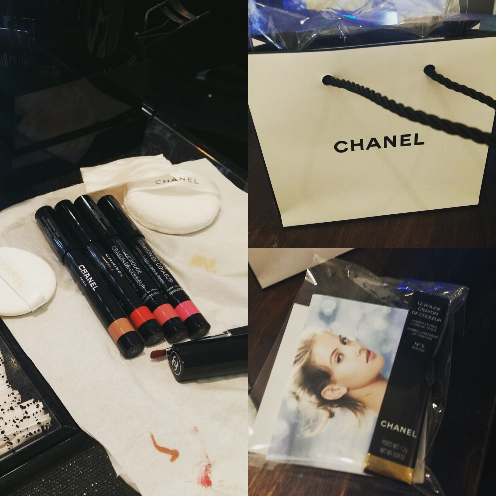

백화점 달려가서 5번색상 데려왔습니다 ^^;;
립스틱이 죄다 붉은색 계열이라 다른색상 찾아볼려고 이것저것 테스트해봤지만
결국 젤 잘 어울리는건 5번.........빨강.......OTL ㅋㅋㅋㅋ
중앙에 붉은색 바르고 외곽을 1번 누드 색상으로 그라데이션 해 주셨는데 늠 이쁘더라구용
스틸로랑 다른점을 물어보니
쵹쵹하지만 지속력은 크레용이 더 좋다고 이야기 해 주셨습니다 :)
스틸로는 글로시한 타입에 강하게 바르면 뭉개지는것도 있지만 크레용은 쵹쵹하면서도 텍스쳐가 다르다구욤
타르트 팔레트 피치계열 아이섀도우 + 폴앤조 분홍분홍한 블러셔 바르고 갔었는데
수정화장 해 주시면서 조심스럽게
....저.........볼터치 하신거죠........? 라고 물어봐서 빵 터졌어요 ㅋㅋㅋㅋㅋㅋ
왜 난 화장한게 티가 안날까 ㅋㅋㅋㅋㅋㅋㅋㅋㅋ 나름 열심히 했는데
마구 웃으면서 전 나름 열심히 화장하는데 아무도 못 알아본다고 설명하니까
화장을 굉장히 연하게 하셔서 그렇다고 합니당
지금 눈화장엔 오렌지계열 블러셔가 어울린다면서 스틱블러셔로 슥슥 발라주시는데
역시 전문가의 손은 달라 ;ㅂ;
얼굴이 훨 밝아지더라구용 ㅜㅜ
아 진심 ㅋㅋㅋㅋㅋ 여유생기면 1:1 메이크업 레슨 함 가봐야겠어요
슨생님을 붙들고 고민상담 + 하소연을 하고싶습니다
나도 화장하고 누구세요? 소리 함 듣고싶다!!
문제가 화장을 빡시게 하면 굉장히 무섭고 성질 더러버 보여요 -_-;;;
위 사진에 있는 색상 다 테스트 해봤는데
스아실 색상자체가 너무 이쁘다!! 란 생각드는건 없었습니다 :p
제품력 좋고 뭘골라도 중박이상은 치겠지 란 생각에 데려왔는데
만족스럽습니당 홍홍